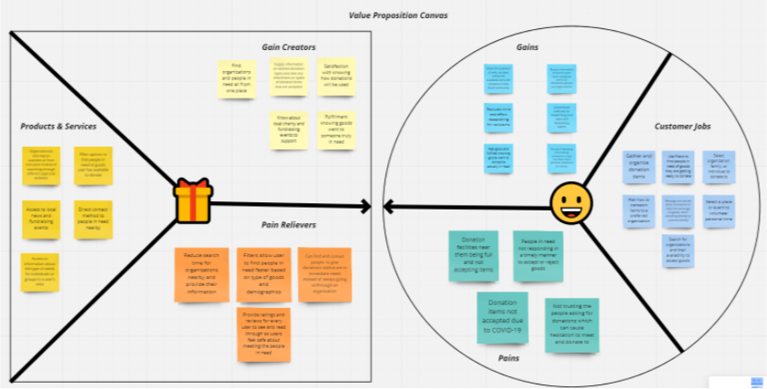
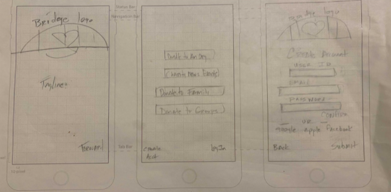
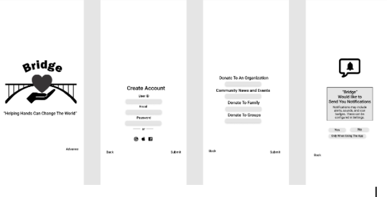
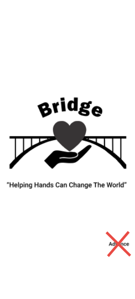
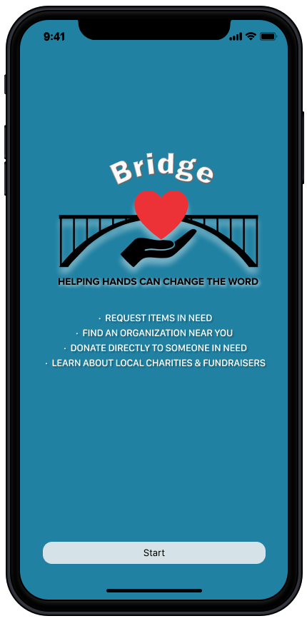
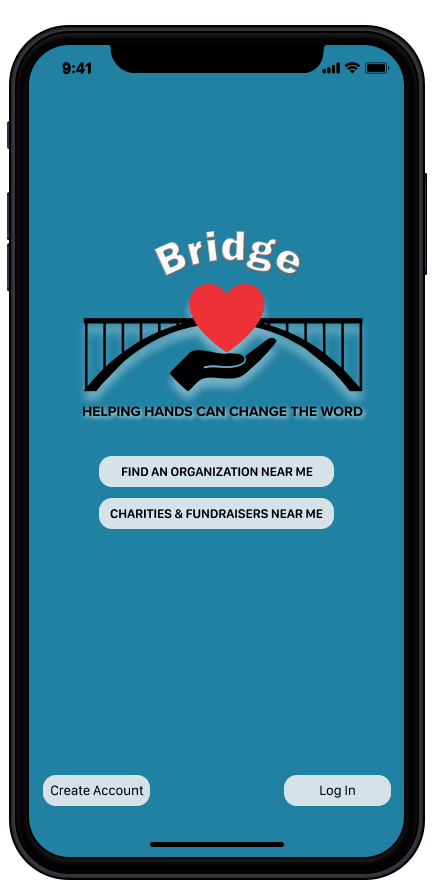
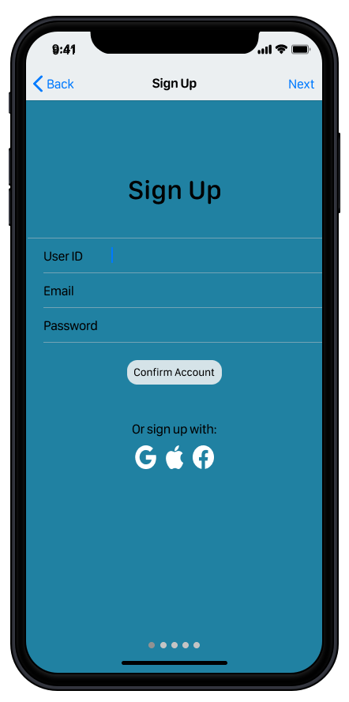
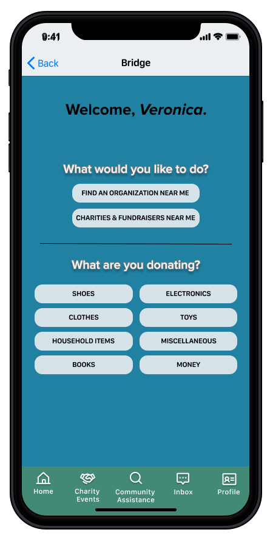

Bridge: A Community Donation Mobile App

Summary of Project
Bridge was designed to allow users to find those in need of donations within their community vs always donating to organizations that already receive a lot of help. This app increases the impact of donations made and brings great satisfactions to users.
My Role
UX Researcher, UI Designer
Tools Used
Type of Project
Keywords
The Problem
People want to donate items where they are needed most, however, they tend to donate mostly to organizations they are already familiar with, which lessens the impact on other charitable organizations in their community.The Solution
Bridge resolves the struggles of people wanting an easy way to access information about the charitable needs in their local community. The app equips them with tools that streamline their research experience and also provides them with resources to create positive change.Research
Findings
-Users want a safe way to donate goods to people in their community -Users want a safe and reliable way to donate -Users would donate outside of their local “Goodwill” if they knew someone who is in needImpactful User Quote #1
“I go to Goodwill because the drop-off process is so easy, but I would 100% donate to someone in my community before going to a big corporation any day.”Impactful User Quote #2
“There are always difficult times. Today it’s a neighbor, but tomorrow it could be me so I would prefer to donate to someone in need that’s in my community if there was a safe way of doing so.Definition & Ideation
User Insight Statement
During the interviews and survey, we discovered that many people donate to other people or organizations in need if they knew about them and would also love to feel they are truly making a difference when donating. Therefore, we believe that donors need an easier way to find people and organizations that are in need and that we might be able to help if we create an app that not only allows you to know all about organizations in one’s area but also about people nearby that may need assistance. We might do this by allowing users to search for organizations in one’s area and provide their most important information such as hours of operation and goods that they accept while also having a section in the app where people can post what they are in need of and what area they reside in so users are aware of more recipients to donate to. Doing this will allow our product to give users more options when donating and allow them to feel like they are truly making an impact by donating their goods to those really in need.Value Proposition
Our organization Bridge is developing a Mobile Donation App to help people giving or seeking donations find an easy way to connect to non-profits, groups or individuals within their communities which in turn elevates local support. We’re better because we offer a community driven centralized locator which enables those giving and those needing a direct way to communicate and connect. We’re believable because we have streamlined and personalized the process of local charitable giving which speaks directly to the heart of effecting positive change. Design Development

Anim pariatur cliche reprehenderit, enim eiusmod high life accusamus terry richardson ad squid. 3 wolf moon
officia aute, non cupidatat skateboard dolor brunch. Food truck quinoa nesciunt laborum eiusmod. Brunch 3
wolf moon tempor, sunt aliqua put a bird on it squid single-origin coffee nulla assumenda shoreditch et.
Nihil anim keffiyeh helvetica, craft beer labore wes anderson cred nesciunt sapiente ea proident. Ad vegan
excepteur butcher vice lomo. Leggings occaecat craft beer farm-to-table, raw denim aesthetic synth nesciunt
you probably haven't heard of them accusamus labore sustainable VHS.

Anim pariatur cliche reprehenderit, enim eiusmod high life accusamus terry richardson ad squid. 3 wolf moon
officia aute, non cupidatat skateboard dolor brunch. Food truck quinoa nesciunt laborum eiusmod. Brunch 3
wolf moon tempor, sunt aliqua put a bird on it squid single-origin coffee nulla assumenda shoreditch et.
Nihil anim keffiyeh helvetica, craft beer labore wes anderson cred nesciunt sapiente ea proident. Ad vegan
excepteur butcher vice lomo. Leggings occaecat craft beer farm-to-table, raw denim aesthetic synth nesciunt
you probably haven't heard of them accusamus labore sustainable VHS.
Testing
Tasks
1. Sign up for an account 2. Search & message recipient to donate children’s clothing toFeedback
“’Agree on exchange of goods’ verbiage was confusing - users asked when exactly they had to click on that. After the donations are made, right before, during? It was confusing to them.” “Users stated that the word “advance” on the first screen was confusing.”

Final Prototype & Future Developments




Future Developments
Charity Events Icon -Group charities and fundraising events by categories for quicker and easier access to user Ex: Education, medical research, etc. Receipt feature -Allow users to track every donation they make and use for tax purposes if they choose -Partner with cities, smaller organizations, and nonprofits to help advertise them and bring awareness to any assistance or help they may need